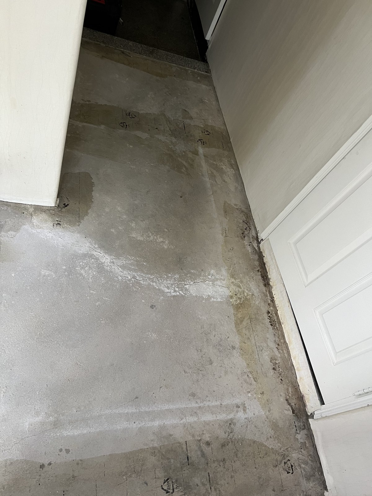
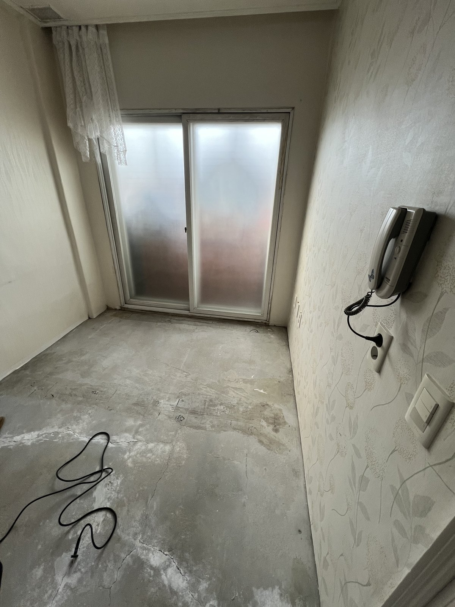
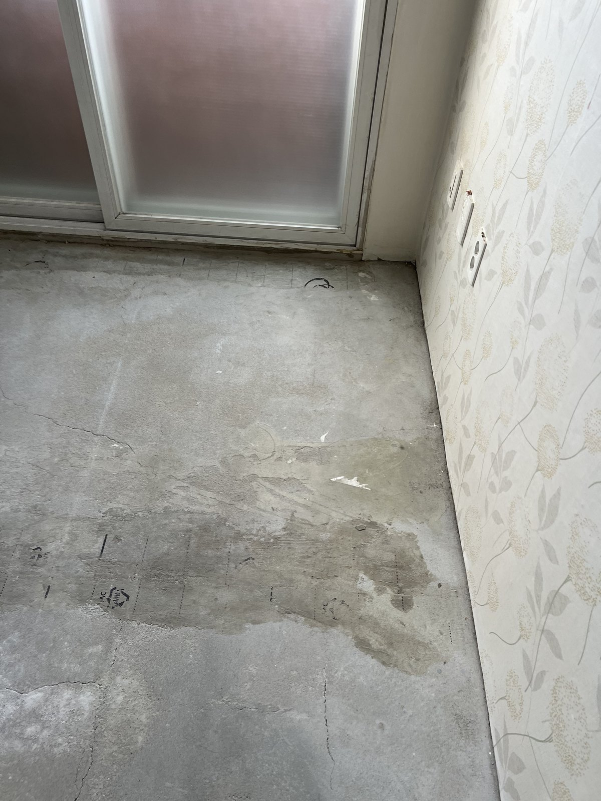
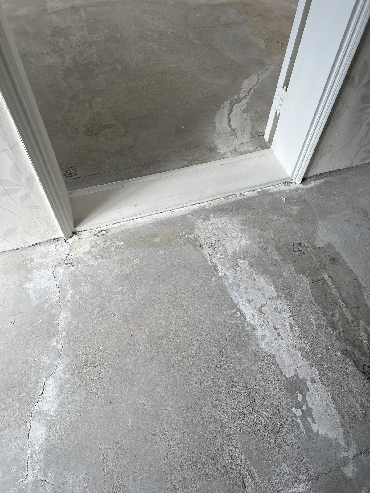
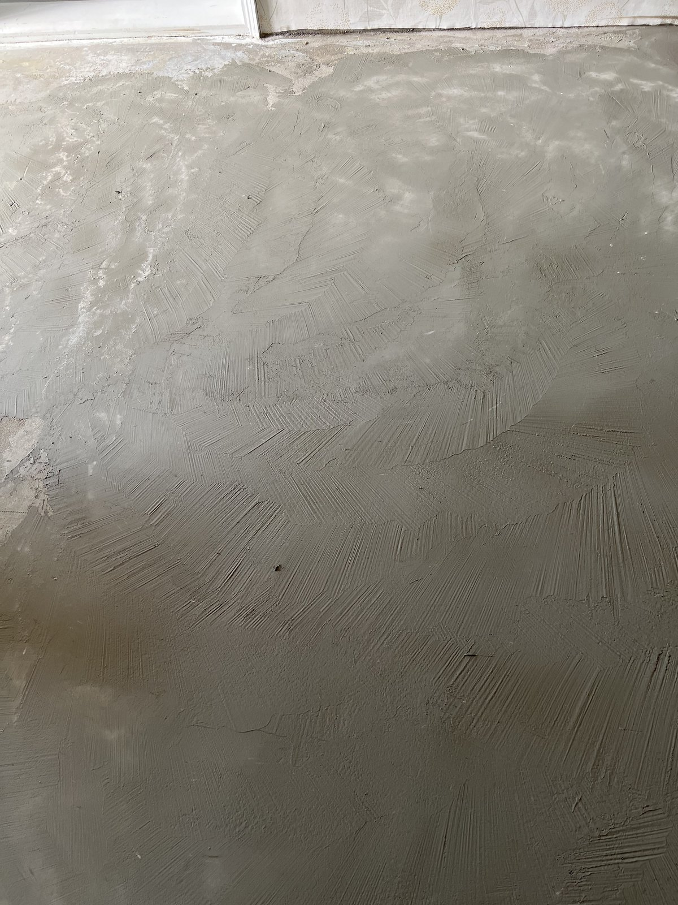
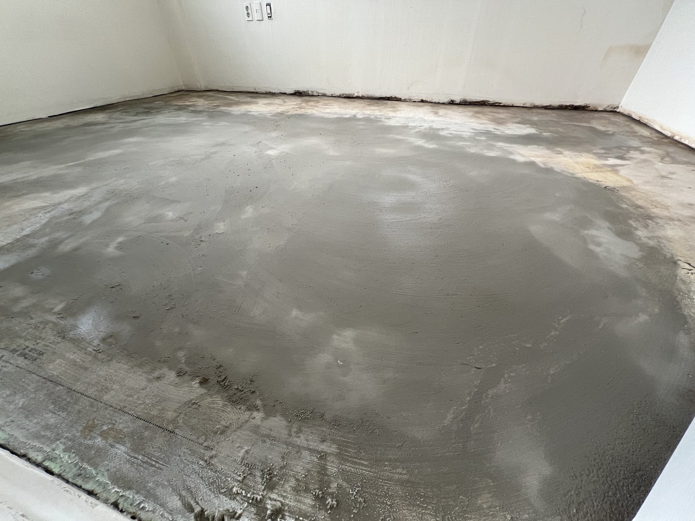
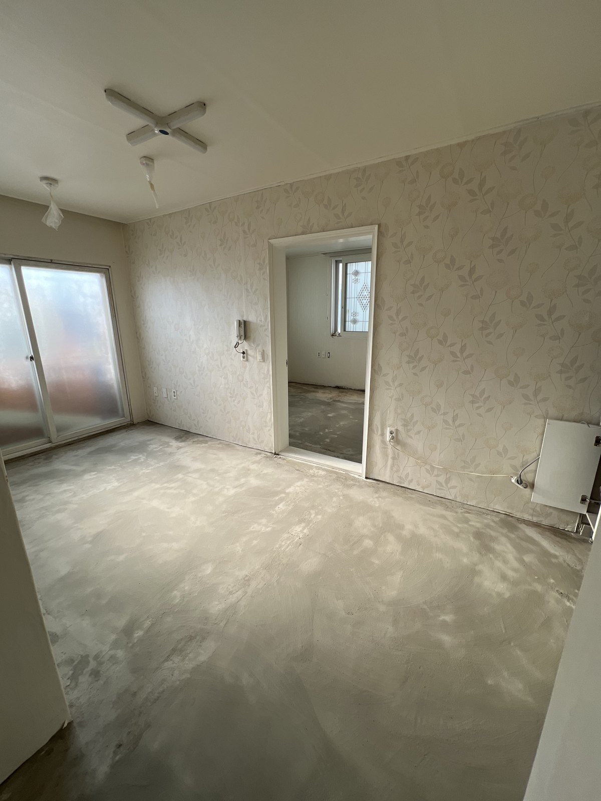

대전 서구 탄방동 주택 바닥 미장｜도배·마루 전에 바닥을 고르게

작업 핵심
현장 작업 한눈에 보기
- 현장
- 대전 서구 탄방동 주택 · 방과 복도 바닥
- 문제
- 바닥재를 걷어 낸 바닥
군데군데 남은 얼룩과 보수 자국 - 작업
- 방·복도 바닥 미장
도배·마루 전 바닥 고르기 - 결과
- 미장을 마친 바닥 사진 확인
도배·마루는 이후 공정(진행 중)
대전 서구 탄방동 주택 한 세대를 손보는 중에 남긴 바닥 미장 기록입니다. 바닥재를 걷어 낸 방과 복도 바닥을 미장으로 고르게 폈고, 도배와 마루는 이어서 진행합니다. 실제 사진 8장으로 소개합니다.
1. 작업 전 복도 바닥
대전 서구 탄방동 주택 한 세대 작업입니다. 2026년 11월 12일 사진을 순서대로 소개합니다.
바닥재를 걷어 낸 복도 바닥입니다. 얼룩과 보수 자국이 군데군데 남아 있었습니다.

2. 작업 전 창 쪽 방
창 쪽 방입니다. 바닥 곳곳에 얼룩이 남아 있었습니다.

3. 작업 전 다른 방
다른 방 바닥입니다. 창 아래쪽으로 얼룩진 자리가 보입니다.

4. 문턱 앞 보수 자국
문턱 앞 바닥입니다. 흰색으로 메운 자국이 보입니다.

5. 미장으로 편 바닥 면
바닥을 미장으로 고르게 펴 바른 면입니다. 흙손으로 문지른 자국이 남아 있습니다.

6. 미장을 마친 창 쪽 방
2번 사진과 같은 창 쪽 방을 미장한 뒤의 모습입니다.
7. 미장을 마친 큰 방
다른 방도 바닥 전체를 미장으로 고르게 폈습니다.

8. 미장을 마친 방과 다음 공정
미장을 마친 방입니다. 바닥이 마르면 도배와 마루를 이어서 진행합니다.

9. 확인한 범위와 상담 안내
이번 기록은 바닥 미장까지의 사진입니다. 도배와 마루는 아직 진행 전이라 완료로 적지 않았습니다. 미장 두께와 마르는 기간은 자료가 없어 적지 않았습니다.
바닥재를 바꾸거나 도배·마루를 새로 하실 때는 방 전체와 바닥 상태를 찍어 상담해 주세요.